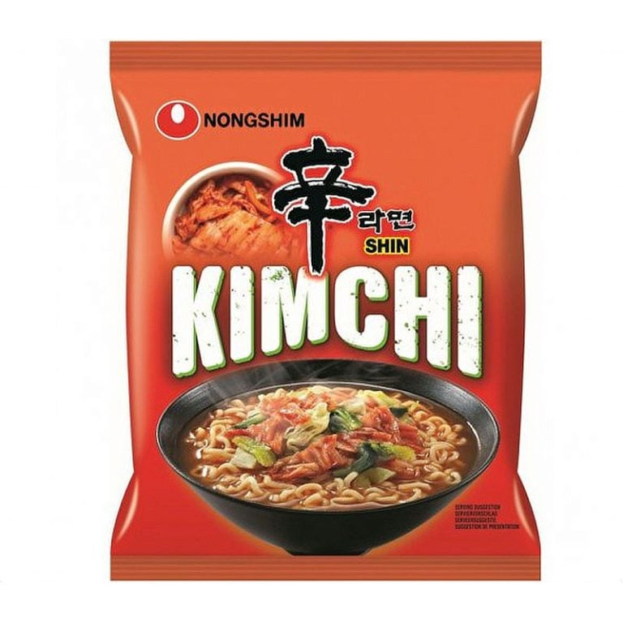
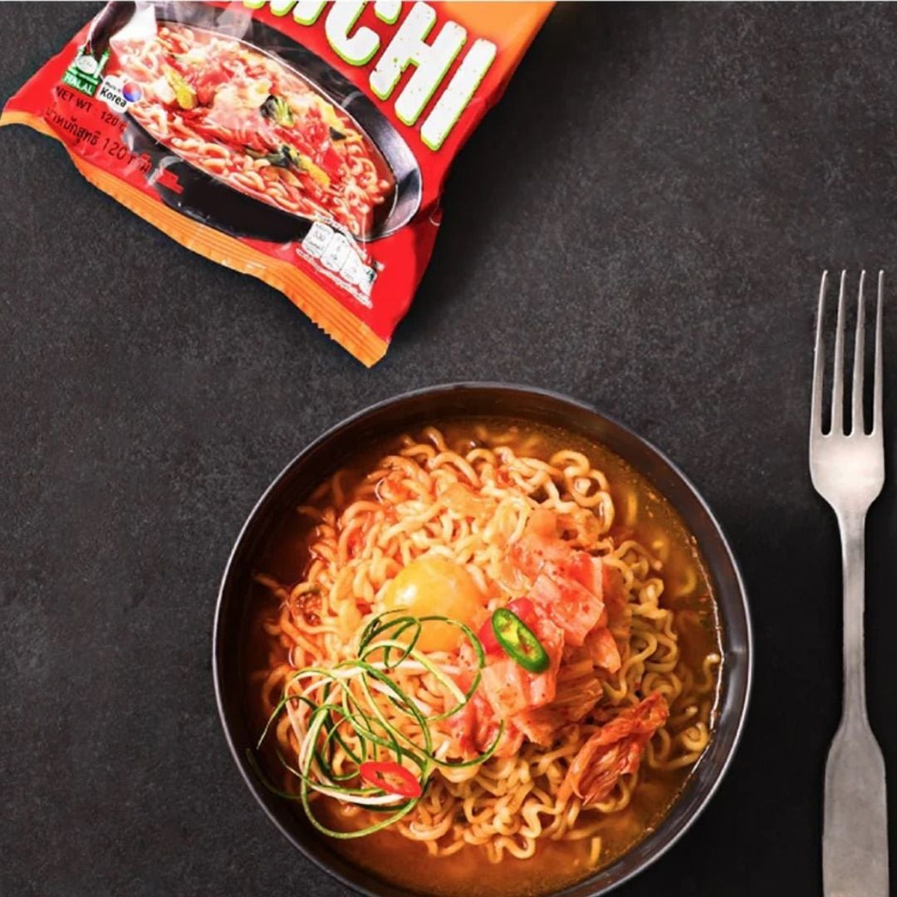
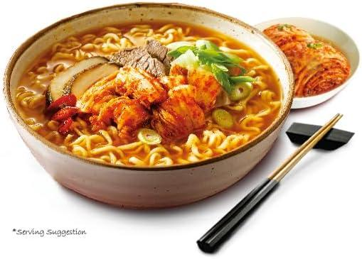

<div> <table style="border-collapse: collapse; width: 99.9809%;" border="1"><colgroup><col style="width: 49.9522%;"><col style="width: 49.9522%;"></colgroup> <tbody> <tr> <td> <div><span style="font-size: 14pt;"><strong>Kimchi Ramyun de la Nongshim, 120g</strong></span></div> <div><span style="font-size: 14pt;">&Icirc;ncearcă Nongshim Shin Ramyun cu aromă intensă de Kimchi! Legendarul gust picant Shin se &icirc;mbină perfect cu aciditatea revigorantă a celebrului preparat coreean din varză fermentată. O porție consistentă de 120g, ideală pentru zilele &icirc;n care ai nevoie de o masă caldă, savuroasă și extrem de rapid de preparat.</span></div> </td> <td></td> </tr> <tr> <td></td> <td><span style="font-size: 14pt;">Transformă o pungă de tăiței &icirc;ntr-un festin asiatic! Baza picantă și acrișoară de kimchi primește o notă cremoasă dacă adaugi un gălbenuș de ou și puțină ceapă verde. O experiență intensă și reconfortantă, perfectă pentru o cină rapidă care &icirc;ți aduce aromele din Coreea direct &icirc;n farfurie.</span></td> </tr> <tr> <td><span style="font-size: 14pt;">Experimentează echilibrul perfect dintre tăițeii instant și gustul tradițional coreean. O supă fierbinte, cu tăiței elastici și o bază bogată de kimchi fermentat, plină de prospețime și iuteală moderată. Adaugă feliile tale preferate de carne sau legume proaspete pentru un pr&acirc;nz rapid, absolut memorabil.</span></td> <td></td> </tr> </tbody> </table> </div>